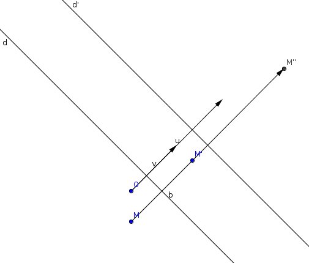
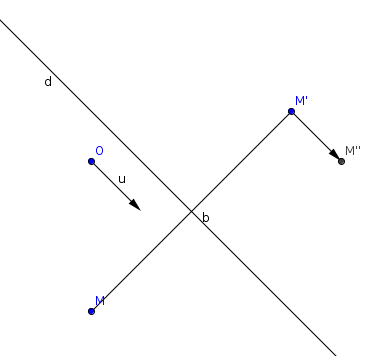

| Choisissez votre langue ! | Choose your language ! |
Ce ne sont certainement pas les seules. En particulier si on compose une telle symétrie avec un déplacement, on obtient un antidéplacement.
Commençons par étudier le cas de la composée d'une symétrie axiale avec une translation.
Cas particulier
On examinera en premier le cas où le vecteur de translation \( \displaystyle \overrightarrow{u} \) est orthogonal à l'axe d de la symétrie.Dans un repère où l'origine est un point de l'axe et où un vecteur de base est colinéaire à l'axe de la symétrie et l'autre est orthogonal à cet axe la détermination analytique de la symétrie est :
\( \displaystyle \left\{ \begin{matrix} {x' = x} \\ {y' = - y} \\ \end{matrix} \right. \)
dans ce même repère la translation a une expression annalytique :\( \displaystyle \left\{ \begin{matrix} {x'' = x'} \\ {y'' = k + y'} \\ \end{matrix} \right. \)
La détermination analytique de la composée est donc :\( \displaystyle \left\{ \begin{matrix} {x'' = x} \\ {y'' = k - y} \\ \end{matrix} \right. \)
Que nous pouvons encore écrire :\( \displaystyle \left\{ \begin{matrix} {x'' = x} \\ {y'' - k/2 = - \left( {y - k/2} \right)} \\ \end{matrix} \right. \)
Et on reconnait là une symétrie axiale dont l'axe d' est translaté de l'axe de la symétrie initiale par une translation de vecteur \( \displaystyle \overrightarrow{v}=\frac{\overrightarrow{u}}{2} \) .
Cas général
Le vecteur \( \displaystyle \overrightarrow{u} \) de la translation peut se décomposer en la somme d'un vecteur \( \displaystyle \overrightarrow{u_{1}} \) // à l'axe de la symétrie et d'un vecteur \( \displaystyle \overrightarrow{u_{2}} \) ⊥ à cet axe.Comme \( \displaystyle T_{\overrightarrow{u}} = T_{\overrightarrow{u_{1}}} \circ T_{\overrightarrow{u_{2}}} \)
On peut donc conclure de ce qui précède que la composée d'une symétrie axiale avec une translation peut toujours être écrite comme la composée d'une symétrie axiale avec une translation // à l'axe de la symétrie.
They are certainly not the only ones. In particular, if we compose such a reflection with a proper isometry, we obtain an improper isometry.
Let's start by studying the case of the composite of an axial symmetry with a translation.
Special case
We will first examine the case where the translation vector \( \displaystyle \overrightarrow{u} \) is orthogonal to the mirror d of the reflection.In a frame where the origin is a point on the mirror and where a basis vector is collinear with the mirror and the other is orthogonal to this mirror, the analytical determination of the symmetry is:
\( \displaystyle \left\{ \begin{matrix} {x' = x} \\ {y' = -y} \\ \end{matrix} \right. \)
in this same frame the translation has an analytical expression:\( \displaystyle \left\{ \begin{matrix} {x'' = x'} \\ {y'' = k + y'} \\ \end{matrix} \right. \)
The analytical determination of the composite is therefore:\( \displaystyle \left\{ \begin{matrix} {x'' = x} \\ {y'' = k - y} \\ \end{matrix} \right. \)
Which we can still write:\( \displaystyle \left\{ \begin{matrix} {x'' = x} \\ {y'' - k/2 = - \left( {y - k/2} \right)} \\ \end{matrix} \right. \)
And we recognize there an axial symmetry whose axis of is translated from the axis of the initial symmetry by a translation of vector \( \displaystyle \overrightarrow{v}=\frac{\overrightarrow{u}}{2} \) .General case
The vector \( \displaystyle \overrightarrow{u} \) of the translation can be broken down into the sum of a vector \( \displaystyle \overrightarrow{u_{1}} \) // to the mirror and a vector \( \displaystyle \overrightarrow{u_{2}} \) ⊥ to this mirror.As \( \displaystyle T_{\overrightarrow{u}} = T_{\overrightarrow{u_{1}}} \circ T_{\overrightarrow{u_{2}}} \)
It can therefore be concluded from the above that the composite of a reflection with mirror line with a translation can always be written as the composite of a reflection with a translation // at the mirror.

démonstration
Tout d'abord un antidéplacement est par définition une isométrie telle que l'application linéaire orthogonale associée soit négative. On pourra revoir par exemple .Il est facile de voir que relativement à une base orthonormée \( \displaystyle \left ( \overrightarrow{i},\overrightarrow{j} \right ) \) la matrice d'une application linéaire orthogonale du plan dans lui même est du type :
\( \displaystyle \begin{pmatrix} a & b \\ b & {- a} \\ \end{pmatrix} \)
avec a2+b2=1.Ici a et b sont tout simplement les coordonnées de l'image de \( \displaystyle \overrightarrow{i} \) .
Il est facile de voir qu'une telle application linéaire possède une droite de points fixes.
En effet, les points fixes sont solutions du système de rang 1 :
\( \displaystyle \left\{ \begin{matrix} {x = {ax} + {by}} \\ {y = {bx} - {ay}} \\ \end{matrix} \right. \)
Si a=1 et b=0 la droite des points fixes est celle de vecteur directeur \( \displaystyle \overrightarrow{i} \) , sinon le vecteur directeur est : \( \displaystyle \overrightarrow{u} = \begin{pmatrix} b \\ {1 - a} \\ \end{pmatrix} \)Soit f un antidéplacement du plan, et \( \displaystyle \overrightarrow{f} \) son application linéaire associée, \( \displaystyle \overrightarrow{u} \) un vecteur directeur de la droite invariante de \( \displaystyle \overrightarrow{f} \) .
Prenons alors un repère de type \( \displaystyle \left ( O,\overrightarrow{u},\overrightarrow{v} \right ) \) où \( \displaystyle \overrightarrow{v} \) est un vecteur orthogonal à \( \displaystyle \overrightarrow{u} \) .
La détermination analytique de f est donc, dans un tel repère :
\( \displaystyle \left\{ \begin{matrix} {x' = x_{0} + x} \\ {y' = y_{0} - y} \\ \end{matrix} \right. \)
Ce qui prouve que f est une symétrie-glissée.proof
First of all, an improper isometry is by definition an isometry such that the associated orthogonal linear map is negative. We can review for example .It is easy to see that relatively to an orthonormal basis \( \displaystyle \left ( \overrightarrow{i},\overrightarrow{j} \right ) \) the matrix of an orthogonal linear map from the plane to itself is of the type:
\( \displaystyle \begin{pmatrix} a & b \\ b & {-a} \\ \end{pmatrix} \)
with a2+b2=1.Here a and b are simply the coordinates of the image of \( \displaystyle \overrightarrow{i} \) .
It is easy to see that such a linear map has a line of fixed points.
Indeed, fixed points are solutions of the system of rank 1:
\( \displaystyle \left\{ \begin{matrix} {x = {ax} + {by}} \\ {y={bx}-{ay}}\\ \end{matrix} \right. \)
If a=1 and b=0 the line of the fixed points is that of direction vector \( \displaystyle \overrightarrow{i} \) , otherwise the direction vector is: \( \displaystyle \overrightarrow{u} = \begin{pmatrix} b \\ {1 - a} \\ \end{pmatrix} \)Let f be an improper isometry of the plane, and \( \displaystyle \overrightarrow{f} \) its associated linear map, \( \displaystyle \overrightarrow{u} \) a direction vector of the invariant line of \( \displaystyle \overrightarrow{f} \) .
Let's then take a frame of the type \( \displaystyle \left ( O,\overrightarrow{u},\overrightarrow{v} \right ) \) where \( \displaystyle \overrightarrow{v} \) is a vector orthogonal to \( \displaystyle \overrightarrow{u} \) .
The analytical determination of f is therefore, in such a frame:
\( \displaystyle \left\{ \begin{matrix} {x' = x_{0} + x} \\ {y' = y_{0} - y} \\ \end{matrix} \right. \)
This proves that f is a glide-symmetry.|
Création Gilles Dubois - licence CC-BY-SA
Created by Gilles Dubois - licence CC-BY-SA
|
Septembre 2023
September 2023
|
Version mobile Jquery
Mobile Jquery version
|
|